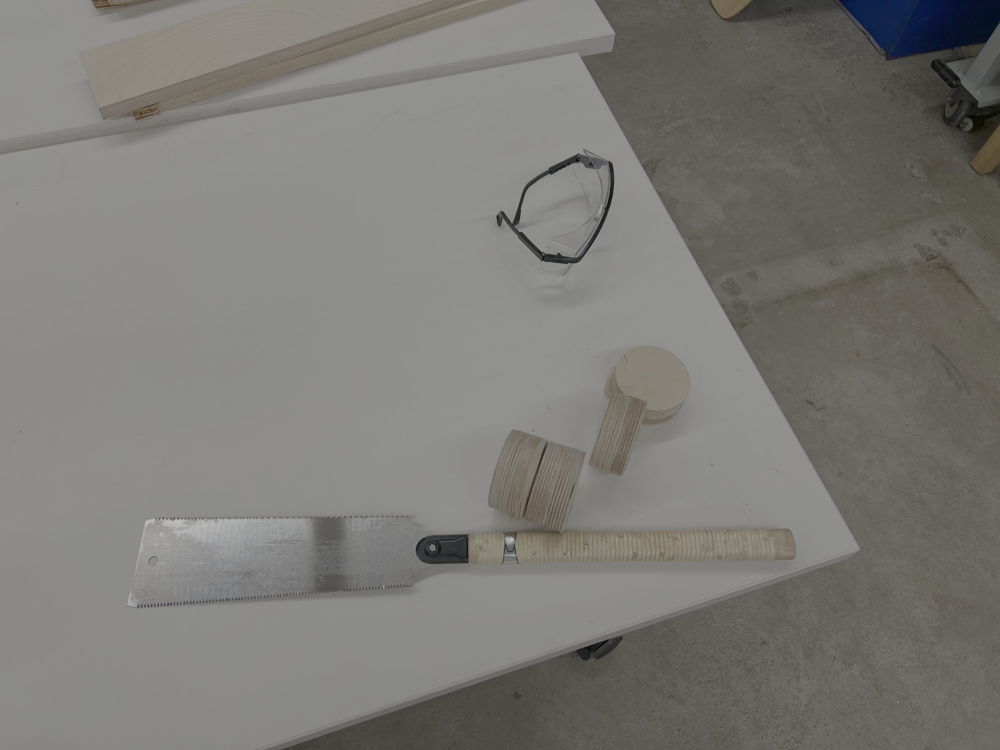
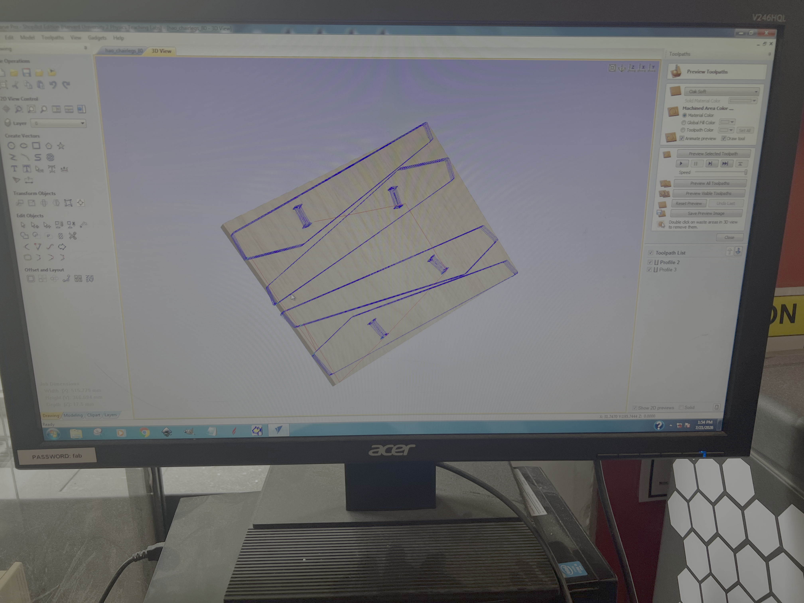
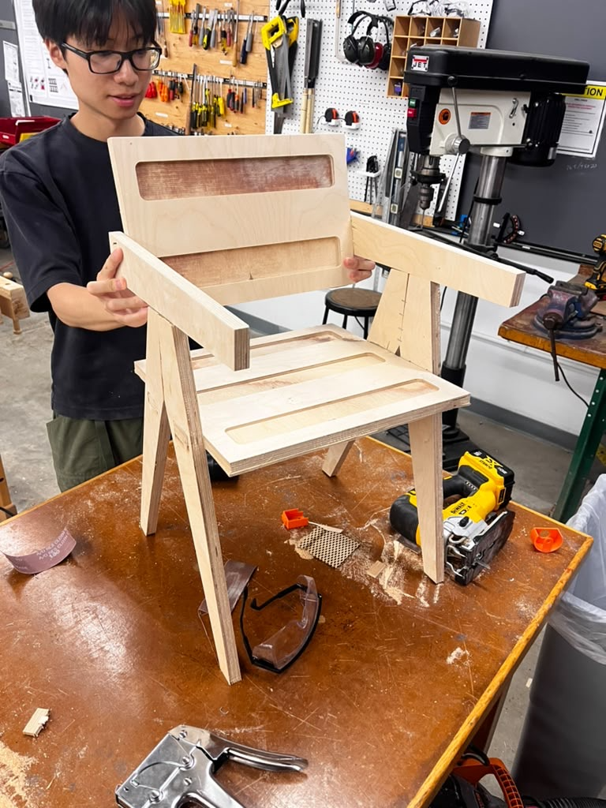
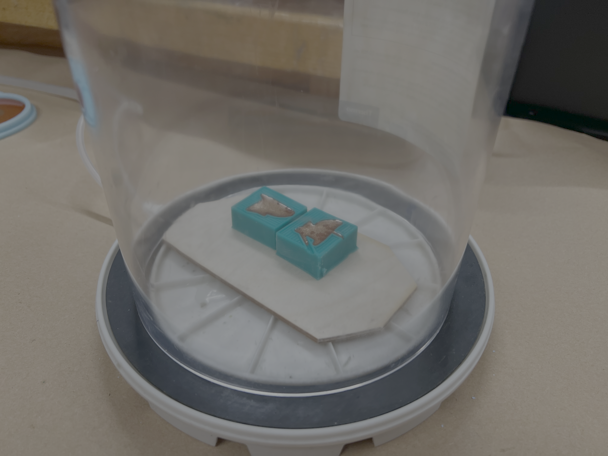
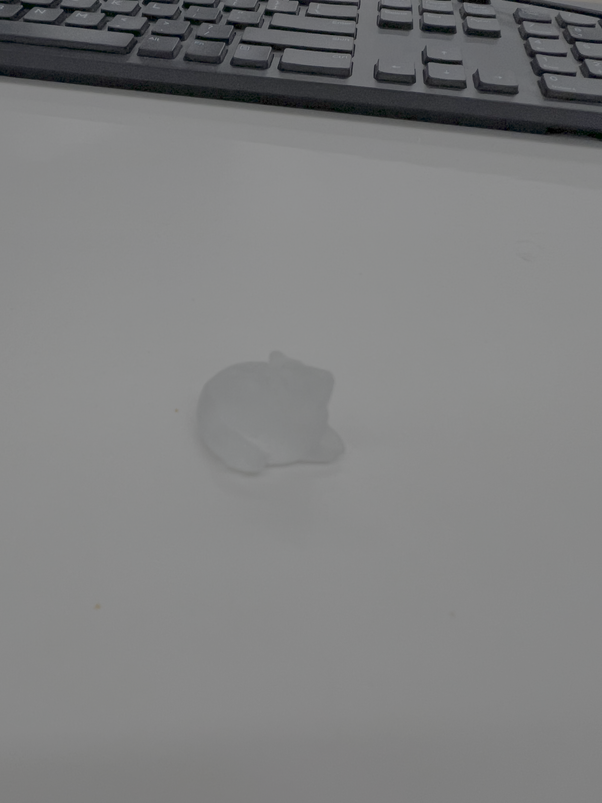

Week 8: CNC Milling
Assignment: Milling & Postprocessing
We worked in a group of 4 for this assignment, and I was charged with preparing materials for milling and assembling our design.


Preparation of materials.
Hao found designs for a millable chair, which fits together using friction, so we decided to use these designs for this assignment.
I started by taking a large scrap piece of wood which had pre-attached cylinders on it, and sawing them off using a Japanese saw. This was a lot harder and time consuming than expected as they were wood glued, but eventually they came off. Using the dimensions provided to me by Hao, I cut the seat and back part footprints using a jig saw.


CAD of the chair legs & Milled seat.
We loaded the CAD of the legs, back and seat onto the milling software and Hao took care of the settings. Unfortunately even though the mill was set to overshoot the thickness of the plywood, it didnt make it all the way through, which led to the use of a jig saw to cut out the pieces.
It was also noticed that the holes that allow the seat and back to slot into the legs were a little too small, so with sanding and sawing they had to be widened.


Partly & Fully assembled chair.
Once the pieces were adjusted to properly fit together, I assembled them and they held under friction! Hao then added the seat back to complete the build.


Mold & Molded mouse.
Chloe worked on molding a small mouse for her friend for the posprocessing side of the assignment, and used a wax mold to set the mouse in resin (Shown above).